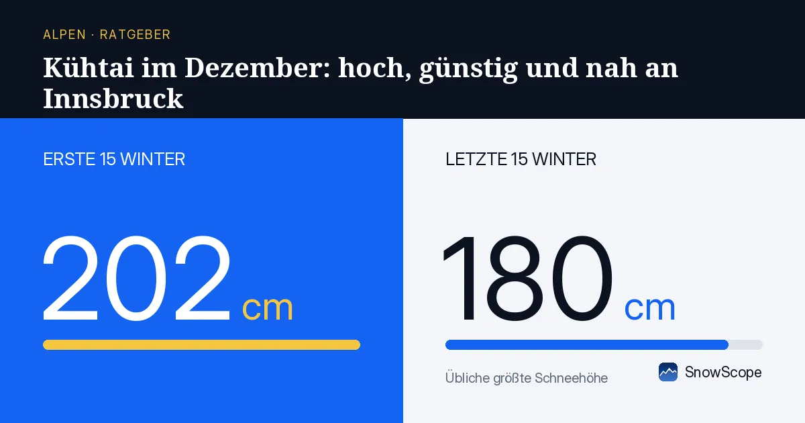

Kühtai im Dezember: hoch, günstig und nah an Innsbruck
Kühtai liegt höher als die obersten Lifte vieler österreichischer Skigebiete, und diese Höhe zahlt sich im Dezember aus. Die Basis auf 1939 m hält Schnee, den tiefere Täler verlieren: an einem typischen 15. Dezember zeigt die SnowScope-Statistik aus 46 Wintern 60 cm dort, mit 72 cm auf Mittelhöhe und 112 cm oben. Die Nebensaison läuft bis 18. Dezember mit einem Sechstagespass für EUR 269.
Die Live-Schneeprognose für Kühtai in der SnowScope-AppSchneehöhen, Pulverschnee-Alarme und 3D-Karte, gratis.
Höhe als Versicherung
Die Schneehöhe nimmt mit der Höhe zu. Kühtai zeigt dies klar über seine 569 m Höhendifferenz. In der Basis (1939 m) liegt ein typischer Mitteldezember bei 60 cm, auf Mittelhöhe (2223 m) bei 72 cm und oben (2507 m) bei 112 cm. Diese Abstufung gibt dir Optionen, wenn tiefere Pisten dünner werden.
Auch in schwachen Jahren hält der Berg Schnee. In 1 von 10 Wintern kommt der 15. Dezember mit nur 27 cm in der Basis. Doch in 46 Wintern der Aufzeichnungen war die Basis an diesem Datum nie ausgeapert. Das kartierte Gebiet umfasst 34 km Pisten und 13 Lifte, und jede Abfahrt liegt in der Höhe.


Wann du vor Weihnachten buchen solltest
Anfang Dezember ist das Risiko größer. In der Basis haben 70 % der Winter in der ersten Dezemberwoche 30 cm oder mehr, steigernd auf 85 % bis 8.–14. Dezember. Bis zur dritten Woche (15.–21. Dezember) erreicht es 93 %, und 96 % bis zur Woche vor Neujahr. Auf Mittelhöhe ist es früher sicherer: bereits 89 % in Woche eins.
Der übliche erste Tag mit 30 cm in der Basis ist der 12. November. Für eine Dezemberbuchung warte bis Mitte des Monats, um die Chancen stark in dein Favor zu verschieben, oder akzeptiere das Dünnschnee-Risiko, wenn du in der Woche 27. November bis 4. Dezember zum Nebensaisonpreis buchst.
Was die letzten 15 Winter uns zeigen
Kühtai hat sich weniger erwärmt als tiefere Täler in den Alpen. Der Dezemberdurchschnitt in der Basis sank leicht von 53 cm in den ersten 15 Wintern auf 49 cm in den letzten 15 Wintern. Oben hielt er sich konstant bei etwa 103–104 cm. Das Weihnachtswochenbild änderte sich stärker: 100 % der ersten 15 Winter hatten bis Weihnachtswoche 30 cm in der Basis, aber nur 87 % der letzten 15.
Der letzte Winter (2025–26) war dünn: 36 cm in der Basis am 15. Dezember. Hier ist dünn noch fahrbar. Der Trend deutet darauf hin, dass Kühtai zuverlässiger bleibt als tiefere Gebiete, aber kein Dezember ist garantiert.
Die Nebensaisonrechnung
Buche bis 18. Dezember, um den Nebensaisonpreis zu sichern. Ein Tagespass kostet EUR 50,50 und ein Sechstagespass EUR 269. Ab 19. Dezember springen die Preise auf EUR 66,50 pro Tag und EUR 353 für 6 Tage. Die Ersparnis bei einem Wochenpass beträgt EUR 84.
Ab 4. Dezember funktioniert jeder Pass mit 2 Tagen oder länger auch in der Kühtai-Hochoetz-Region, mit 90+ km verbundenen Pisten ohne Zusatzkosten. Das zählt, wenn Wind Kühtais höheres, offeneres Gelände sperrt.
Kühtai versus Stubaier Gletscher
Der Stubaier Gletscher, 20 Minuten entfernt bei Innsbruck, liegt oben höher (3208 m gegen 2507 m) und hält dort mehr Schnee: 169 cm an einem typischen 15. Dezember. Seine Basis ist tiefer (1692 m) und dünner, mit nur 40 cm und Schnee an 72 % der Mitteldezemberwochen. Kühtais 60 cm in der Basis ist dicker.
Ein Hauptsaisontag am Stubaier Gletscher kostet EUR 75,50 und ein Sechstagespass EUR 355. Für eine Dezemberwoche vor 19. Dezember ist Kühtais EUR 269 für 6 Tage EUR 86 günstiger. Wähle Stubaier, wenn die zusätzliche Höhe und Tiefe des Gletschers dich reizt und du mehr zahlen möchtest. Wähle Kühtai für besseren Basisschnee und eine niedrigere Rechnung.
Was du mitnehmen und wissen solltest
Kühtai ist ein hochgelegenes Passdorf an einer Bergstraße. Fahre mit Winterreifen und führe Schneeketten mit; die Straße wird nach Neuschnee zur Lawinenkontrolle gesperrt. Baue einen Puffertag in deine Pläne ein, falls du ein festes Abreisedatum hast.
Das kartierte Skigebiet ist klein und kann von einem mittelmäßigen Skifahrer in zwei bis drei Tagen gründlich befahren werden. Nutze ab 4. Dezember die Hochoetz-Verbindung, um neues Gelände zu erkunden, ohne extra zu zahlen.
Tipps für Skifahrer
- Buche deinen Sechstagespass bis 18. Dezember, um EUR 269 statt EUR 353 ab 19. Dezember zu zahlen.
- Ziele auf die Woche 15.–21. Dezember oder später ab: 93 % der Winter hatten bis dahin 30 cm in der Basis, gegen 85 % in der zweiten Woche.
- Fahre auf höhere Pisten, wenn der Wind auffrischt; die verbundene Hochoetz-Region (ab 4. Dezember verfügbar) bietet Schutz auf ihrem sanfteren Gelände.
- Fahre mit Winterreifen und Ketten; die Straße zu Kühtai wird nach Stürmen zur Lawinenarbeit gesperrt. Prüfe avalanche.report vor der Ausfahrt.
- In einem dünnen Jahr fahre zuerst Mittelhöhe und die Spitze – die Basis braucht möglicherweise einen Frischschneeerlebnis, um Steine zu decken.
Zu diesen Zahlen
Die Schneehöhen der Skigebiete sind der meiste Schnee in den oberen Hängen am angegebenen Tag; es sind Schätzungen für eine Fläche, keine Messung an einem Punkt. Prognosen können sich ändern. Lies vor dem Freeriden immer den offiziellen Lawinenlagebericht.
Offizielle Lawinenlageberichte: Avalanche.report – Euregio Tyrol
Diesen Bericht zitieren
Für Forschung, Lehre oder Presse: Zahlen und Grafiken sind unter CC BY 4.0 mit dieser Quellenangabe frei nutzbar.
SnowScope (2026), Kühtai im Dezember: hoch, günstig und nah an Innsbruck, https://snowscope.app/blog/de/2026/11/kuehtai-december-ski-trip-highest-village-innsbruck-budget.html, abgerufen am 2026-11-14
SnowScope (Atlas Labs). (2026, November 14). Kühtai im Dezember: hoch, günstig und nah an Innsbruck. SnowScope snow reports. https://snowscope.app/blog/de/2026/11/kuehtai-december-ski-trip-highest-village-innsbruck-budget.html
BibTeX
@misc{snowscope2026kuehtaidecemberskitriphi,
author = {{SnowScope (Atlas Labs)}},
title = {Kühtai im Dezember: hoch, günstig und nah an Innsbruck},
year = {2026},
month = nov,
howpublished = {\url{https://snowscope.app/blog/de/2026/11/kuehtai-december-ski-trip-highest-village-innsbruck-budget.html}},
note = {Published 2026-11-14 13:29 UTC; accessed 2026-11-14}
}· CC BY 4.0 · Methoden, Daten und Werkzeuge →
Kühtai: Schnee und Temperatur nach Höhe, dieser Winter vs letzter (Werkzeuge) →
Kühtai folgen
Gratis: eine Nachricht, wenn Neuschnee kommt, und jeden Morgen die Vorhersage.